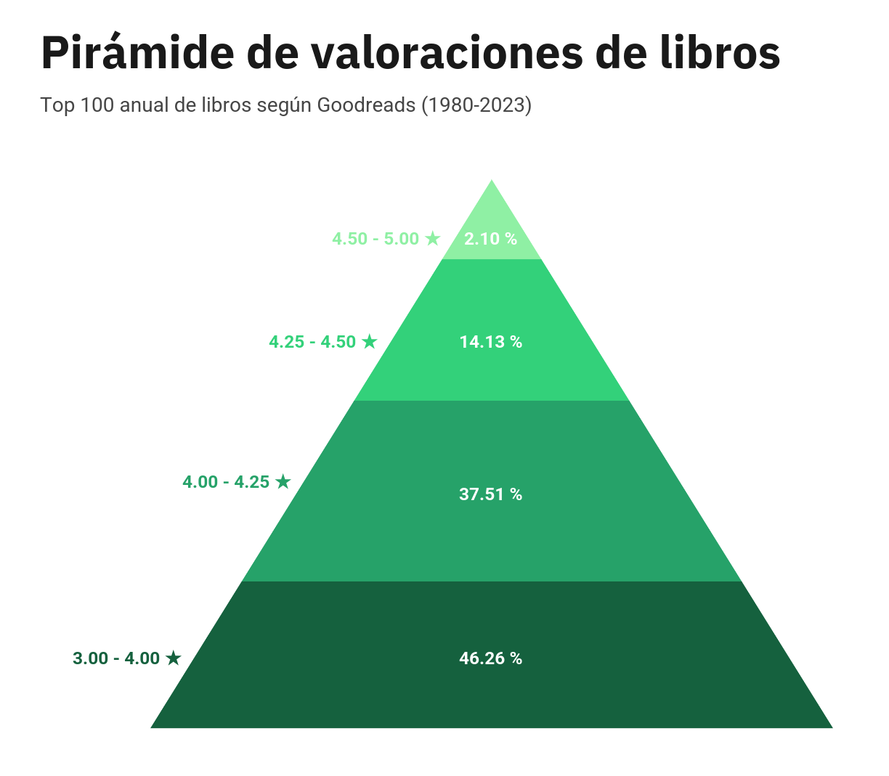
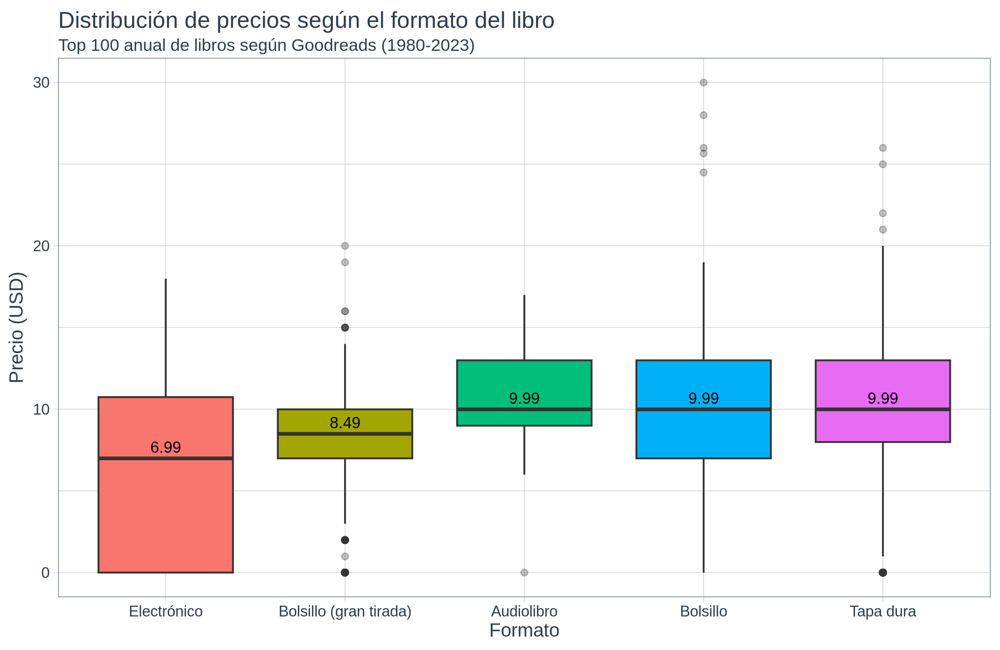
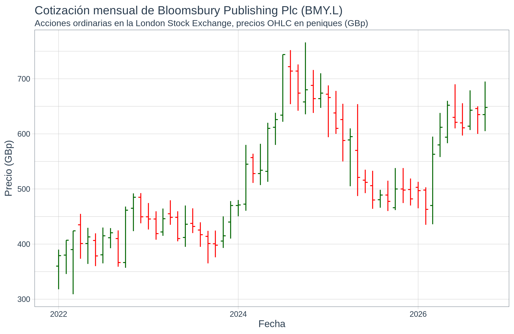

PEC 2 - Visualización de datos (M2.859)
GRUPO I - Técnicas básicas y populares
Pyramid Chart

GRUPO II - Técnicas habituales y específicas
Boxplot

GRUPO III - Técnicas menos habituales o más específicas
OHLC Chart
